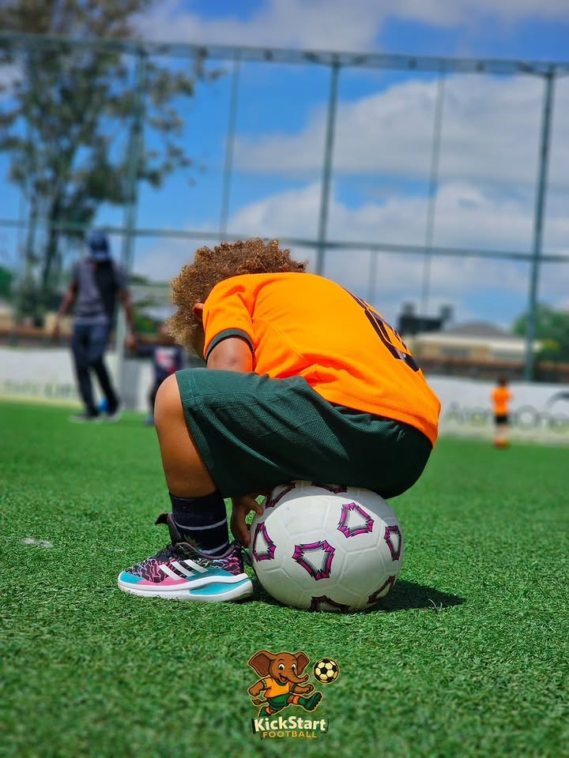

18 months – 2½ years
Little Kicks
A gentle introduction to football through fun games, movement and exploration.
Explore Little Kicks →
Fun football classes designed around your child's age, ability and stage of development.
Our programmes are carefully designed to introduce children to football through fun, imaginative games and activities.
Each programme develops as children grow, helping them build confidence, coordination, communication and football skills.
Through our programmes, we create positive football experiences that help children build confidence, develop new skills and enjoy being active.
A gentle introduction to football through fun games, movement and exploration.
Explore Little Kicks →
Helping young players develop coordination, confidence and a love of football.
Explore Junior Kickers →
Building football skills while encouraging teamwork, creativity and confidence.
Explore Mighty Kickers →
Developing confident young players through energetic football sessions and team-based activities.
Explore Mega Kickers →
Football gives children an opportunity to develop physical skills while learning about teamwork, communication and confidence.
Our sessions are designed around enjoyment first, helping children discover their own love for the game.
Discover Our Approach →Enter your city to find a class